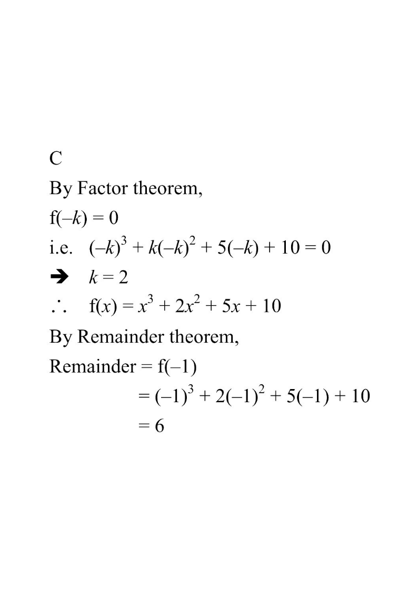

Step 1 — Given information: f(x) = x³ + kx² + 5x + 10, divisible by (x + k).
Given / Factor theoremValue of kRemainder theorem
Question Let $f(x)=x^{3}+kx^{2}+5x+10$, where $k$ is a constant. If $f(x)$ is divisible by $x+k$, find the remainder when $f(x)$ is divided by $x+1$.
A. $-2$
B. $2$
C. $6$
D. $18$

Figure (original exam diagram)
Step 1Use the Factor Theorem.
Since $f(x)$ is divisible by $x+k$, we have $f(-k)=0$.
$f(-k)=(-k)^{3}+k(-k)^{2}+5(-k)+10=0$
Hint: a polynomial is divisible by $(x-a)$ exactly when $f(a)=0$.
Factor Theorem\((x-a)\ \text{is a factor of }f(x)\ \Longleftrightarrow\ f(a)=0\)Divisible by \(x+k\) means \(f(-k)=0\), which gives \(-k^{3}+k^{3}-5k+10=0\) and hence \(k=2\).
Step 2Simplify and solve for $k$.
$-k^{3}+k^{3}-5k+10=0$
$-5k=-10 \;\Rightarrow\; k=2$
The cubic terms cancel, leaving a simple linear equation.
Step 3Write the full polynomial.
$f(x)=x^{3}+2x^{2}+5x+10$
Substitute $k=2$ back into $f(x)$.
Step 4Apply the Remainder Theorem.
The remainder when $f(x)$ is divided by $x+1$ is $f(-1)$.
$f(-1)=(-1)^{3}+2(-1)^{2}+5(-1)+10$
Dividing by $x+1$ means evaluating at $x=-1$.
Remainder Theorem\(\text{remainder of }f(x)\div(x-a)\ \text{is}\ f(a)\)Dividing by \(x+1\) means evaluating \(f(-1)=-1+2-5+10=6\).
Step 5Evaluate.
$=-1+2-5+10=6$
Careful with signs — the answer is positive.
Answer: C (remainder $= 6$)
PRACTICESimilar question — try it yourself
Question. Let \(f(x)=x^{3}+kx^{2}+4x+12\), where \(k\) is a constant. It is given that \(f(x)\) is divisible by \(x+k\). (a) Find \(k\). (b) Hence find the remainder when \(f(x)\) is divided by \(x+2\).
Show the worked solution
Step 1. (a) By the factor theorem, \(f(-k)=0\): \((-k)^{3}+k(-k)^{2}+4(-k)+12=0\).
Step 2. Simplify: \(-k^{3}+k^{3}-4k+12=0\), so \(-4k=-12\) and \(k=3\).